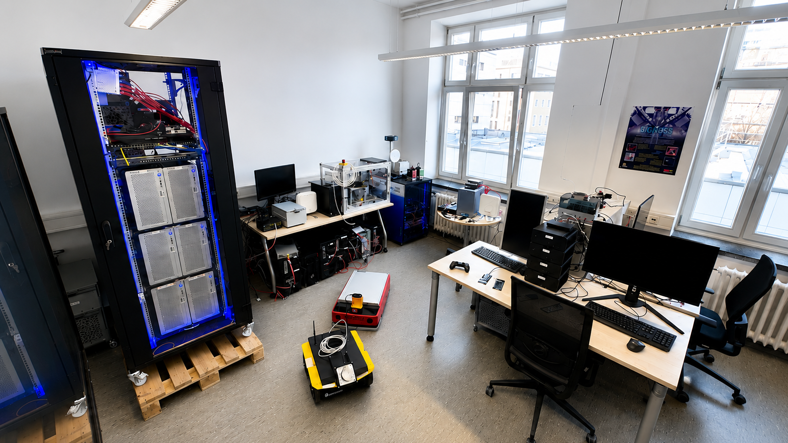
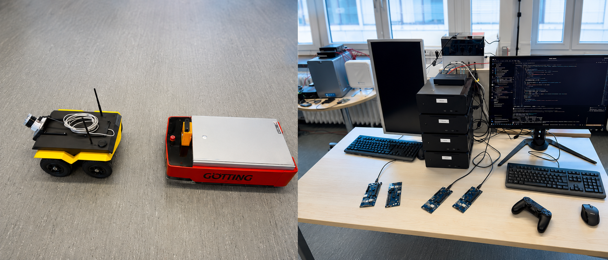
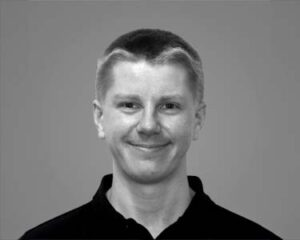
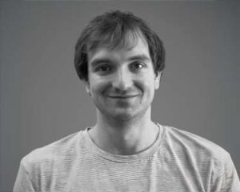
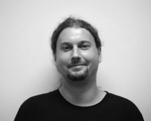

We build experimental setups and testbeds to research, prototype, and evaluate future communication networks in realistic environments — turning emerging network concepts into practical, testable systems.
Our work centres on deterministic networking — guaranteeing bounded latency and reliability for the next generation of industrial, mobile, and converged networks. We span the path from protocol concepts to working hardware testbeds.
Research on precise clock synchronization, deterministic timing, and time-aware communication for future networked systems.
Research on semantic and goal-oriented communication, where information is stored, processed, and transmitted based on meaning, freshness, and usefulness for the application.
Research on resilient and intelligent future networks using agentic reconfiguration, network digital twins, and world models to adapt communication systems in real time.
We don't stop at simulation. Our goal is to turn emerging network concepts into practical, testable systems — measured and evaluated in realistic environments, on real hardware.
Identifying open problems in deterministic communication and designing mechanisms to solve them.
Implementing concepts as working systems and assembling testbeds that mirror real deployments.
Measuring behaviour under realistic conditions to prove guarantees hold beyond theory.
Hands-on experimental setups where our research meets real hardware — from motion control to mobile robots and semantic-aware factory floors.

Compute racks, mobile robots, and real-time control testbeds sharing one space at TU Dresden — the home of every demonstrator below.
A compact motion-control demonstrator for deterministic communication, synchronization, and real-time control.
View testbed →A factory-floor demonstrator prioritizing communication and computation by semantic importance, urgency, and application context.
View testbed →Real-time pendulum control over 5G-TSN — evaluating timing, latency, and closed-loop performance across wired and wireless.
View testbed →An application twin combined with TSN for predictable, resilient, end-to-end reliable service for cyber-physical applications.
View testbed →
Remotely controlling an AGV over converged DECT NR, Wi-Fi, and 5G — deterministic low-latency wireless control with seamless link selection.
View testbed →An application twin that predicts future situations, evaluates action paths in parallel, and prepares the response before the real event happens.
View testbed →A compact motion-control demonstrator used to study deterministic communication, synchronization, and real-time control behavior in future industrial networks.
View testbed →An interactive factory-floor demonstrator showing how communication and computation resources can be prioritized based on semantic importance, urgency, and application context.
View testbed →A real-time pendulum control setup integrated with 5G-TSN, used to evaluate timing, latency, and closed-loop control performance across converged wired and wireless networks.
View testbed →A reliability-focused demonstrator combining an application twin with TSN-based communication to evaluate predictable, resilient, and end-to-end reliable service for cyber-physical applications.
View testbed →Remotely controlling an automated guided vehicle across DECT NR, Wi-Fi, and 5G simultaneously — studying deterministic low-latency control, link selection, and seamless handover for mobile industrial robots.
View testbed →An application-twin-based demonstrator that predicts possible future situations, evaluates multiple action paths in parallel, and prepares the network or application response before the real event happens.
View testbed →The Deterministic Communications Research Group is part of the Deutsche Telekom Chair of Communication Networks at TU Dresden, advancing the science and engineering of networks that deliver on strict timing and reliability guarantees.



Student and graduate research carried out within the group, alongside the group's peer-reviewed publications.
Funded research advancing 6G, TSN, digital twins, and resilient campus networks for Industry 4.0 and mission-critical use.
A 6G platform for programmable campus networks and their digital twins — deterministic, low-latency communication for Industry 4.0.
CampusTwin4In investigates how 6G innovations can advance Industry 4.0 by establishing a flexible, programmable, and modular platform for campus networks and their digital twins. It focuses on key 6G platform capabilities — a centralized controller, novel interfaces, and Time-Sensitive Networking (TSN) — to enable deterministic, low-latency, and reliable communication for industrial applications. New real-time protocols, TSN functions, and control architectures are designed and integrated with digital-twin applications, implemented in demonstrators, and complemented by simulation and monitoring. Performance evaluation and AI-supported optimization allow adaptive network configuration, supporting practical validation, standardization, and deployment of future 6G campus networks.
A central controller for hybrid 6G–TSN networks that configures reliable, time-critical data streams across wired and wireless domains.
The 6G-TSN network enables time-critical communication by combining solutions and standardized procedures from the wired and wireless sectors. High performance requires intelligent integration, especially in hybrid networks where a single data stream passes through both domains — making configuration more complex due to differing mechanisms and conditions. VICTOR6G develops a central controller that characterizes data streams by range and requirements, as in Industry 4.0 use cases, and selects optimal solutions and configurations for reliable connectivity. It integrates existing standards, defines new interfaces, adopts advanced deterministic operating-system functions, and applies optimization techniques. Translator components convert configurations between 6G and TSN domains for seamless integration.
Embodied AI for industrial robots, distributing intelligence across cloud, edge, and device over low-latency 5G/6G.
EMAIRIS investigates novel methods and architectures for embodied AI in industrial robotic systems, with a strong focus on communication and distributed intelligence in networked production environments. By tightly integrating perception, decision-making, and motion execution with multimodal sensing and AI-based behavioral models, robots can act adaptively and learn from experience. A central focus is a scalable, energy-efficient, low-latency infrastructure that dynamically distributes AI processes across cloud, edge, and on-device components using edge computing and 5G/6G communication. This hybrid architecture combines real-time local responsiveness with centralized data analysis and learning, supported by simulation and digital-twin environments for safe training and validation — reducing commissioning times and integration costs while increasing production flexibility.
Resilient 5G campus and nomadic networks for safety-critical and disaster scenarios, including device-to-device and drone deployment.
ANKOMMEN further develops 5G campus networks and nomadic network infrastructures for safety-critical and dynamic scenarios such as disaster situations, ensuring and optimizing the connectivity of end devices under difficult conditions. It addresses two central questions: how reliable, secure roaming between existing campus networks can be achieved — making efficient use of existing infrastructure, expanding coverage, and ensuring resilience of productive communication networks — and how direct device-to-device communication can work even independently of a central 5G core, to maintain communication in networkless situations. The project also advances integration of MCX services and the development and validation of an integrated overall architecture, providing connectivity and MCX functionalities in disaster situations, including within drone deployment.